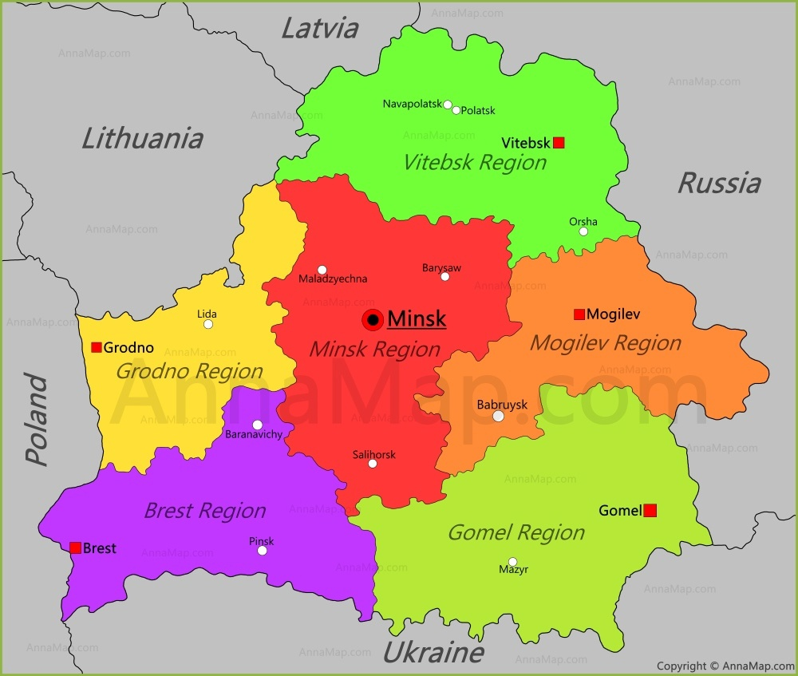

Belarus, traditionellt Vitryssland, formellt Republiken Belarus, är ett land i Östeuropa. Landet är en inlandsstat och gränsar till Lettland, Litauen, Polen, Ryssland och Ukraina. Belarus huvudstad är Minsk. Fram till 1991, då Belarus frigjorde sig från det sönderfallande Sovjetunionen och utropade sin självständighet, hette landet Vitryska SSR och var en av Sovjetunionens förbundsrepubliker.
Belarus är indelat i sex regioner (län):
